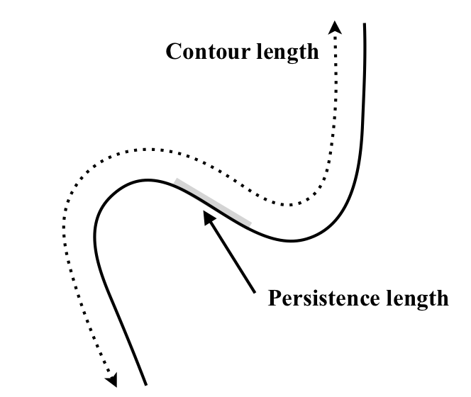

Questions 14 - 34¶
Q14 Expand¶
Expand \(\displaystyle e^x \tan(x)\) using Maclaurin’s theorem to powers up to \(x^4\).
Q15 Expand¶
Show that \(\displaystyle x \frac{(1+x)}{(x-1)^2} = x+3x^2 +5x^3 +7x^4 +\cdots\).
Strategy: The expansion formulae all have the form \((1 \pm x)\) not \((x - 1)\) so the original equation must be put into the correct form. This can be done by multiplying both the top and bottom by \(-1\).
Q16 Relativistic energy¶
The relativistic energy of a particle with mass \(m\) traveling at speed \(\nu\) is
where \(c\) is the speed of light. Compare this energy with the classical energy of the particle.
Strategy: Expand the square root using the binomial expansion and in terms of \(\nu/c \equiv x\).
Q17 Solve¶
Solve \(ax^2 + bx + c = 0\) and show that when \(b^2 >> ac\), one root of the equation is small and tending to zero, the other to \(b/a\).
Q18 Expand & l’Hopital’s rule¶
Use a series expansion to find the limit of \(e^x/(e^x-1)\) as \(x \rightarrow 0\) and show that this gives the same answer as l’Hopital’s rule.
Q19 Expand¶
(a) Expand the summation \(\displaystyle \sum\limits_{k=1}^\infty e^{ikx}\) where \(i =\sqrt{ -1}\) .
Rearrange the terms and re-sum to find a neat expression.
(b) Find an expression for \(\displaystyle \sum\limits_{k=1}^\infty e^{ikx}/k\)
Q20 Condensation polymerisation¶
In condensation polymerization, end-group analysis, which assumes that the rate of reaction is independent of the polymer size, show that if \(k\) monomers are joined together, this has a probability of \(\displaystyle p(k) = (1 - p)p^{k-1}\) where \(p\) is the fraction of groups that have reacted. To form an ‘n-mer’ it is necessary for \(k\) - 1 links to have been made with probability \(p^{k-1}\). What remains is 1 - \(p\), the fraction that has not reacted.
(a) Show that \(\displaystyle\sum\limits_{k-1}^\infty p(k) = 1\).
(b) Calculate \(\langle k \rangle\), the number average, and \(\langle k^2 \rangle\) and \(\sigma\). To calculate \(\langle k^2 \rangle\) start by taking the derivative of \(\langle k \rangle\).
Q21 Sinc function¶
The \(\text{sinc}^2\) function \(\displaystyle\sin^2(x)/x^2\), crops up frequently with Fourier transforms, diffraction, absorption of radiation, and the theory of short laser pulses.
(a) Expand the function as a series and determine the limit when \(x \to 0\).
(b) Plot the function from \(-4\pi \to \pi\) to see if your answer is correct.
Strategy: Expand the sine and take the limit when \(x\) is small.
Q22 Error function¶
The error function \(\displaystyle \text{erf}(x) =\int\limits_0^x e^{-s^2}ds\)
is the integral of the ‘bell-shaped’ or Gaussian probability distribution and is used to obtain the probability of an event with value \(x\).
(a) The integral cannot be evaluated algebraically. Therefore, derive an expansion formula for this integral up to powers of \(x^9\).
(b) Compare your answer with an accurate value computed by Python, for \(x = 0.1, 0.5\), and \(1.0\).
Strategy: Expand \(\displaystyle e^{-s^2}\) as a Taylor series and integrate each term.
Q23 Expand & integrate¶
If \(\displaystyle\tanh^{-1}(x) = \int_0^x \frac{dt}{1-t^2}\),
find \(\tanh^{-1}(x)\) by expanding term by term and integrating. Compare your answer at \(x = 0.5\) using \(\mathrm{tanh^{-1}(0.5)}\).
Q24 1D Schroedinger equation¶
In numerically integrating the one-dimensional Schroedinger equation
where both the potential \(V\) and the wavefunction \(\psi\) are functions of \(x\), and the operator is \(D = d/dx\), the finite difference equation
could be used if \(h\) is a small increment in \(x\). Show that the Taylor expansion of
to lowest order produces \(h^2D^2\psi\).
Strategy We are not told at what point to expand the function about so try a general point \(x_0\). In the Taylor expansion equation \(17\), substitute \(x \rightarrow x\pm h\).
Exercise Show that the next term in the series is \(\displaystyle \frac{h^4}{12}D^4\psi(x)\).
Q25 Expand & integrate¶
Expand the integral \(\displaystyle\tan^{-1}(x) =\int_0^x\frac{dx}{1+u^2}\)
as a series and find a formula for \(\pi\).
Strategy: Expand the argument of the integral and integrate term by term. You may need to try some values of \(\tan^{-1}(x)\) or plot a graph to see what value of \(x\) is likely to produce terms in \(\pi\).
Q26 Fresnel integral¶
Evaluate \(\displaystyle \int_0^2\cos(x^3)dx\) using a series expansion.
Strategy: Evaluating this integral with SymPy, a Fresnel integral is produced which has itself to be evaluated numerically. Instead, estimate the integral with a Taylor series expanded inside the integral with limits \(0\) and \(x\) and then replace \(x\) with \(2\).
Q27 Expand¶
Evaluate \(\displaystyle \int_0^{20} e^{-x} (3x^2 - x^3)dx\)
with SymPy by using a series expansion.
Strategy: The numerical limits to the integral mean that the result is a number not a formula. Expanding the function produces terms that do not obviously lend themselves to being coerced into a neat summation expression, so calculate ‘by gosh and by golly’ i.e. bash your way through to an answer!
Q28 Maclaurin expansion¶
Find the Maclaurin expansion of \((a + x)^{1/2}\) and use this to find the square root of \(5\) to three reliable decimal places.
Q29 Factorial & Stirling approximation¶
The factorial of \(n\) is written \(n! = n(n - 1)(n - 2) \cdots 1\). The Stirling approximation is often used for calculating factorials of large integer numbers and is frequently used in statistical mechanics. It has the form \(\ln(n!) = n \ln(n) - n\). To appreciate the simplification this formula produces, imagine calculating directly \(10^{23}\) or even \(10^6\) compared to using Stirling’s formula; it would be possible to multiply together a million terms but then the number would be too big for most computers to handle. Multiplying \(10^{23}\) terms is just impossible; even if one multiplication took a picosecond it would still take \(\approx 3200\) years to calculate.
Using the Euler-Maclaurin formula, derive the Stirling formula and plot the approximation vs. the true value on a log-log scale.
Strategy: Use the fact that the log of a product of numbers is the same as the sum of their logs, for example \(\ln(3!) = \ln(1) + \ln(2) + \ln(3)\).
Q30 Partition function for rigid rotor¶
The partition function for the rigid rotor model of molecular rotation is often evaluated as an integral rather than a summation because the summation has no closed form. This approximation leads to a systematic error in its value and this is justified by saying that the energy gaps are small and therefore the error in this approximation is also small.
(a) Why is this approximation better for heavy molecules?
(b) Use the Euler-Maclaurin formula to calculate the partition function for a molecule with rotational constant \(B\) at different temperatures.
(c) Compare your results with the integral and summation for HD and \(\text{I}_2\) molecules at \(30\) and \(300\) K.
The bond length for \(\mathrm{HD} = 0.07413\) nm and for \(\mathrm{I_2} = 0.267\) nm. Boltzmann’s constant \(k_B = 0.695\,\mathrm{ cm^{-1}\, K^{-1}}\).
Strategy: Look up the formula for the rigid rotor energy levels in your textbook. The rotational quantum number is \(J\), which starts at zero when the molecule has no rotational energy and hence is not rotating. Notice that the partition function also starts with quantum number \(J = 0\) but the Euler-Maclaurin formula starts the summation at \(1\) so there is an extra term with \(J = 0\) to add to the result. Alternatively, the formula can be modified to start at zero and many textbooks quote this.
Q31 NMR fractional population¶
In an NMR experiment, the fractional population between two nuclear spin states \(\alpha\) and \(\beta\) determines the size of the measured signal. Calculate the fractional population \(\displaystyle f=\frac{n_\beta - n_\alpha}{N}\) when each level is populated according to a Boltzmann distribution with energy \(E_{m_z} = -\gamma \hbar B_zm_z\). Spin state \(\beta\) has an azimuthal (or magnetic or projection) quantum number along the z-axis of \(m_z = 1/2\) and state \(\alpha\) has \(m_z = -\)1/2. The total population \(N=n_\alpha + n_\beta\), \(\gamma\) is the positive magneto-gyric ratio and \(B_z\) the magnetic field in the direction of the z-axis. The upper level is labelled \(\alpha\).
(a) Why does the upper level have \(m_z = -1/2\)?
(b) Show that because the energy gap between levels is very small relative to thermal energy \(k_BT\) that
Strategy: The populations are always given by the Boltzmann distribution as the molecules are in contact with a ‘heat bath’, which is primarily the solvent as this is in vast excess.
Q32 Extending a protein using an atomic force microscope¶
A protein or length of DNA can be extended and straightened either by pulling with an atomic force microscope, AFM, or by inserting it into a flowing viscous liquid. The change in internal energy \(U\) is given by the thermodynamic relationship \(dU = TdS - PdV + Fdx\) where \(F\) is the applied force and \(x\) the extension. The entropy of conformation of the protein, considering it to be a freely jointed chain that contains a total of \(N\) segments each of length \(L\) is
where \(\alpha= x/NL,\; x\) is any extension of the chain such that 0 \(\lt x \le NL\) and \(NL\) is its full length. A conformation is any one of the possible arrangements of the atoms of a molecule that can be reached without breaking bonds or moving atoms through one another.
(a) State Hooke’s law. How is (potential) energy related to force?
(b) Show that at small extension Hooke’s law is obeyed with the force given by \(F = xk_BT/NL^2\). This means that the protein is perfectly elastic and that the internal energy is independent of extension, provided this occurs at a constant temperature and volume. (See Atkins 2001 for a fuller discussion.)
Strategy: To obtain the force it is necessary to differentiate the equation for \(dU\) with \(x\), because energy equals force times distance and force is the derivative of potential energy with distance; \(F = dU/dx\).
Note that the entropy is a function of extension and \(T\) and \(V\) are constant. The requirement to calculate at small extension indicates that a series expansion will be required.
Q33 Worm-like-chain model of protein¶
The ‘worm-like chain’ model of extension is normally used to describe the forced extension of a protein or DNA with an AFM or optical tweezers. The force is given by
where \(\alpha=x/L\) is the fractional extension, \(x\) is the end-to-end distance and \(L\) the contour (total) length. The constant \(p\) is the persistence length and represents the smallest rigid length the polymer exhibits. The persistence length is a measure of bending resistance or flexural rigidity, and this is typically \(\approx 0.4\) nm for a protein and \(\approx 40\) nm for micrometer long polymers such as DNA. See figure.

Figure 4. Contour length.
The force resisting extension exists because of the elastic properties of the polymer and this is contributed to by entropy, and by intermolecular forces and hydrogen bonds which resist extension. The graph of force vs. extension is similar in general shape to that in Fig. 29 (see answers).
(a) Show that at small extension Hooke’s law is obeyed.
(b) At \(300\) K calculate the force constant for a small protein with \(\approx\) 80 residues and total length \(L = 28\) nm and \(p = 0.4\) nm and also calculate that for a long piece of DNA with \(p = 40\) nm and \(L = 16\,\mu \text{m}\).
Comment on their relative magnitudes and compare these with the energy to break a typical chemical bond. Calculate the energy needed to unfold, assuming Hooke’s law applies at large extension, and compare with that of a typical chemical bond.
Strategy: To calculate the force for small extensions in \(\alpha\), it is necessary to expand \(\displaystyle(1 - \alpha)^{-2}\) using the binomial expansion. A small extension implies \(\alpha \lt 1\).
Q34 DNA end to end distance¶
The mean square end-to-end separation of a DNA or other polymer chain is given by
where \(L\) is the contour length and \(p\) the persistence length.
Calculate \(\langle r^2 \rangle\),
(a) if the polymer is long compared to the persistence length \(L \gg p\) and
(b) if the polymer is short \(L \ll p\).